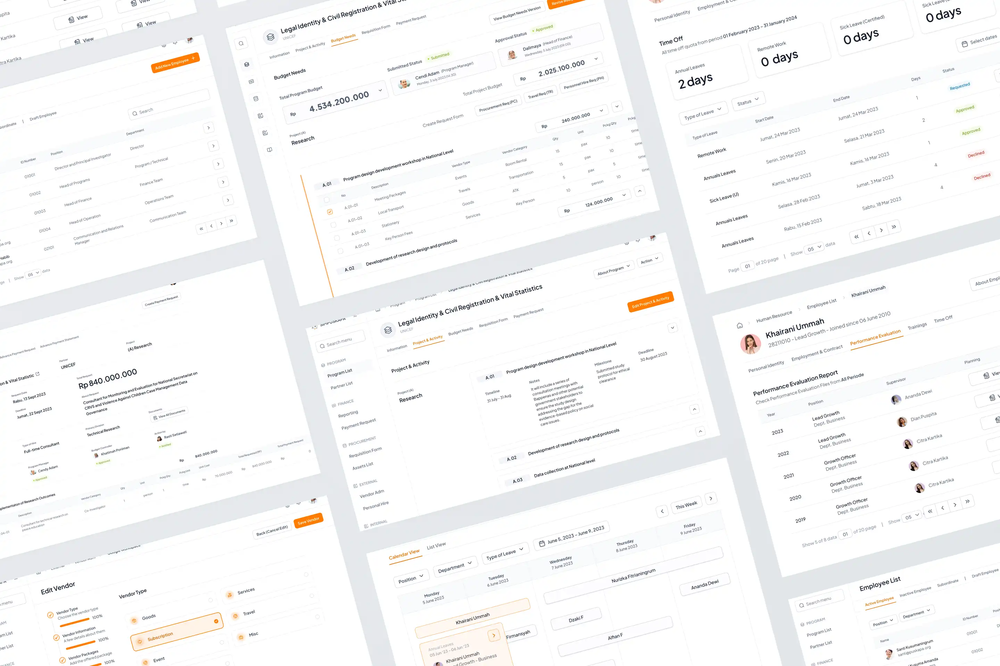

SIMPUSKAPA
Building a richer, calmer writing layer for a static site — a demonstration case study.
- Category
- Information System & Digital Platform
- Period
- 2021 – 2026
- Role
- Designer & Project Manager
- Tools
- Figma, Toogl, Notion
SIMPUSKAPA is a Management Information System for the PUSKAPA (Pusat Kajian dan Advokasi Perlindungan dan Kualitas Hidup Anak) that part of Universitas Indonesia. This system is mainly for reducing the friction of their internal system and help the organization to track and simplify all the information, documents, request and approval.
Challenge
How might we + (intended action) + for + (users or subjects) + so that + (desired outcomes)
Process
Project Phase
...
Key Activities
- Led design and front-end aspects of a management information system supporting thousands of participants and billions of rupiah in annual program funding.
- Worked closely with stakeholders to review and improve existing standard operating procedure, translating operational processes into workflows that could be effectively implemented in the system.
- Designed system flows, information architecture, dashboards, and interfaces across Operations, Finance, and Research departments.
- Translated organizational requirements into system modules and user experiences in collaboration with analysts and developers.
- Managed HR, Vendor, Programs & Budget, Procurement, Finance, and Asset modules, ensuring they remained aligned with operational processes
Stakeholder
| Team | Type | Description |
|---|---|---|
| Operations | Support | Managing Procurement, Assets, and Program Operations |
| Finance | Support | Managing Funds, Payment and Taxes |
| Program | Core | Turun kelapangan, riset, advokasi dan diseminasi |
SIMPUSKAPA berfokus pada stakeholder yang menjadi support (yaitu Tim Operations dan Tim Finance) dari core bisnis (yang dilaksanakan secara umum oleh tim Program).
Teams
- Nurizka F - Designer & Project Manager
- Khairani U- Analyst & Project Manager
- Alfian K - Back-End Developer
- Dzaki F - Front-End Developer
Results
...